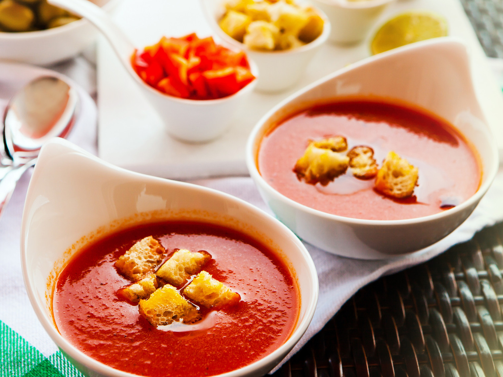

Основные рецепты испанской кухни
-
Гаспачо
Гаспачо - классический испанский томатный суп
Ингредиенты:
- Помидоры — 450 г
- Репчатый лук — 1 головка
- Консервированный перец — 1 штука
- Огурцы — 1 штука
- Кинза — 35 г
- Красный винный уксус — 1 чайная ложка
- Оливковое масло — ¼ стакана
- TABASCO® — по вкусу
Инструкции
- Нарежьте на небольшие кусочки половину помидоров, огурца и лука и переложите в комбайн. Добавьте красный перец и измельчите до состояния пюре. Переложите в миску.
- Добавьте томатный сок, нарезанную кинзу, уксус, оливковое масло и несколько капель табаско. Хорошо перемешайте.
- Из оставшихся помидоров извлеките семена и нарежьте небольшими кубиками. Так же нарежьте огурец и лук. Добавьте все в суп. Посолите и поперчите и поставьте в холодильник охлаждаться.
-
Крем-каталана

Традиционное каталонское блюдо, которое известно также под названием крем святого Иосифа. Основа — молоко, яйца и сахар, лимон же опционален, но здорово украшает этот десерт
Ингредиенты:
- Сахар — 1 стакан
- Яичный желток — 4 штуки
- Кукурузный крахмал — 1 столовая ложка
- Палочки корицы — 1 штука
- Лимон — 1 штука
- Молоко — 2 стакана
Инструкции
- Отделить белки от желтков. В миксере или вручную взбить желтки с сахаром до тех пор, пока масса не побелеет.
- Переложить массу в сотейник, влить молоко, добавить кукурузный крахмал, палочку корицы и цедру лимона. Медленно нагреть, постоянно помешивая, пока масса не загустеет. Немедленно снять с огня.
- Важно не передержать крем на огне: как только масса станет плотной и почувствуется сопротивление при помешивании, крем нужно снять с огня, иначе он свернется или расслоится.
- Убрать палочку корицы и разлить крем в рамекины. Дать остыть и убрать в холодильник на 2–3 часа.
- Застывший крем посыпать сахаром и обжечь горелкой до образования хрустящей корочки, как у крем-брюле. Прогреть под грилем в течение 10 минут. Подавать сразу же.
-
Испанская паэлья

Национальное испанское и валенсийское блюдо из риса, подкрашенного шафраном, с добавлением оливкового масла. Кроме этого в паэлью могут добавляться морепродукты, овощи, курица, белое вино, зелень и специи. В некоторых регионах Испании рис заменяется на фасоль.
Ингредиенты:
- Куркума — 10 г
- Длиннозерный рис — 150 г
- Оливковое масло — 50 мл
- Репчатый лук — 1 головка
- Чеснок — 3 зубчика
- Куриная грудка — 350 г
- Свежий красный перец — 1 штука
- Чоризо — 150 г
- Зеленая стручковая фасоль — 250 г
- Белая рыба — 250 г
- Мидии в ракушках — 350 г
- Белое сухое вино — 250 мл
- Креветки — 250 г
- Куриный бульон — 150 мл
- Кальмары — 250 г
Инструкции
- В большой кастрюле сварите рис с куркумой в подсоленной воде. Обсушите.
- В сковороде разогрейте масло и добавьте мелко нарезанный лук. Томите до мягкого состояния.
- Нарежьте курицу на небольшие кусочки и положите к луку. Готовьте 4 минуты, убавив огонь до среднего.
- Добавьте измельченный чеснок, красный перец, нарезанную пополам фасоль и чоризо. Жарьте около 5 минут.
- Добавьте нарезанную рыбу, креветки и мидии и тушите 8 минут.
- Залейте все вином и бульоном и доведите до кипения. Тушите 1 минуту и добавьте рис.
- В чистой сковороде хорошо разогрейте 10 мл масла и выложите кальмары, нарезанные кольцами. Жарьте около 45 секунд.
- Добавьте кальмары к остальным ингредиентам, посыпьте специями, хорошо перемешайте и подавайте немедленно.
-
Чуррос

Чуррос — это замечательные испанские (и португальские) жареные пончики из заварного теста, которые популярны сейчас во всем мире. Можно назвать их и не пончиками, а просто десертом, но суть не меняется: это очень вкусная штука. В Испании чуррос — один из самых популярных завтраков. Вкуснее всего они с чашкой горячего шоколада: обмакиваете в него чуррос — и едите.
Ингредиенты:
- Пшеничная мука — 150 г
- Разрыхлитель — 1 чайная ложка
- Соль — щепотка
- Оливковое масло — 1 столовая ложка
- Вода — 250 мл
- Растительное масло — 1 л
- Сахар — 60 г
Инструкции
- Просеять муку, добавить соль и разрыхлитель. Довести до кипения воду с оливковым маслом.
- Влить горячую воду к муке и замесить тесто. Оно должно получиться густым, липким и немного тягучим.
- Переложить тесто в кондитерский мешок со звездчатой насадкой. В толстостенной кастрюле или глубокой сковороде разогреть растительное масло. Выдавить несколько чуррос длиной 15–20 см в разогретое масло. Жарить, помешивая, до золотистого цвета. Затем выложить на бумажные полотенца, чтобы избавиться от лишнего масла. Готовые чуррос посыпать сахаром и тут же подавать.